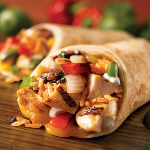

Recipes

Avocado Toast
Delicious Avocado Spinach Toast
See Recipe
- 3 pieces of your choice of bread (I used Ezekiel Sprouted Whole Grain)
- 2 large ripe avocados
- 3 cups of uncooked spinach
- 1/4 cup cherry tomatoes, sliced
- 1/2 lemon
- Olive Oil
- Chili Flakes
- Toast your bread and put aside.
- While bread is toasting, heat up about 1 tablespoon of olive oil in a pan. Add spinach and cook for about 3-4 minutes or until wilted (but not until it is completely soft).
- Scoop your avocado out into a bowl and mash with a fork. Spread on toast.
- Top your toast with spinach, tomatoes, and red chili flakes. Drizzle a bit of olive oil and squeeze some lemon juice on each slice for extra flavor.
Spinach Salad
Quick Pomegranate Spinach Salad
See recipe
- 1 (10 ounce) bag baby spinach leaves, rinsed and drained
- 2 ounces of sautéed chicken breast
- 1/4 cup alfalfa sprouts (optional)
- 1 pomegranate, peeled and seeds separated
- 4 tablespoons balsamic vinaigrette
- 1. Place spinach in a salad bowl with chicken. Sprinkle pomegranate seeds over the top,and drizzle with vinaigrette.
Chicken and Green Beans
Yummy Chicken and Green Beans
See Recipe
- 1 pound boneless skinless chicken breasts cubed
- 1/2 teaspoon salt
- 1/4 teaspoon pepper
- 4 cups green beans trimmed and cut in 1 in. pieces
- 1/4 cup chicken broth low sodium
- 2 tablespoons hoisin sauce
- 1 clove garlic minced
- 2 tablespoons rice wine vinegar
- 2 tablespoons soy sauce low sodium
- 2 tablespoons minced ginger
- 2 teaspoons sesame oil
- 1 teaspoon chili paste
- scallions and brown rice - to serve optional
- Pre-heat a wok or deep frying pan over high heat and spray with cooking spray.
- Sprinkle chicken cubes with salt and pepper and stir-fry until brown, about 7-9 minutes, stirring frequently. Remove chicken from wok and set aside.
- Add green beans to the pan and toss until they start to soften, about 2-3 minutes.
- In a small bowl, whisk together all remaining ingredients: chicken broth through chili paste. Pour mixture into the wok and bring to a boil then reduce to simmer. Stir-fry until green beans are tender.
- Add chicken back to the wok and toss until heated through.
- Sprinkle with scallions and serve over brown rice if you wish.

Parfait
Parfait with Assorted Berries
See Recipe
- 3 cups vanilla nonfat yogurt
- 1 cup fresh or defrosted frozen strawberries in juice
- 1 pint fresh blackberries, raspberries or blueberries
- 1 cup good quality granola(optional)
- Layer 1/3 cup vanilla yogurt into the bottom each of 4 tall glasses. Combine defrosted strawberries, blackberries, and raspberries. Serve parfaits immediately to keep granola crunchy.
Pancake
Pancake
See Recipe
- 1 cup all-purpose flour
- 2 tbsp. sugar
- 2 1/2 tsp. baking powder
- 1/2 tsp. salt
- 1 1/4 cup milk or buttermilk
- 3 tbsp. butter, melted
- 1 large egg
- vegetable oil for brushing pan
- In large bowl, whisk flour, sugar, baking powder, and salt. Add milk, butter and, egg; stir until flour is moistened.
- Heat 12-inch nonstick skillet or griddle over medium heat until drop of water sizzles; brush lightly with oil. In batches, scoop batter by scant 1/4-cupfuls into skillet, spreading to 3 1/2 inches each. Cook 2 to 3 minutes or until bubbly and edges are dry. With wide spatula, turn; cook 2 minutes more or until golden. Transfer to platter or keep warm on a cookie sheet in 225°F oven.
- Repeat with remaining batter, brushing griddle with more oil if necessary.
Squash Soup
Savory Butternut Squash Soup
See recipe
- 2 tbsp butter or olive oil
- 1.5 cups chopped yellow onion
- 1/4 tsp salt
- 1/8 tsp black pepper
- 1 3- lb roasted butternut squash
- 1/8 tsp ground cinnamon
- 6 cups vegetable or chicken stock
- Melt the butter in a soup pot over medium heat, then add the onion, salt, and pepper, and cook for 10 minutes, until the onions are soft.
- Add the roasted butternut squash cubes and cinnamon, and stir for 2 minutes, until the cinnamon smells fragrant.
- Add the stock, bring the liquid to a boil over high heat, then reduce to a simmer. Cook for 2 minutes at a simmer.
- Puree the soup, either using an immersion blender, or by cooling the soup slightly and blending in a blender (you will likely need to do this in batches).
- Taste the soup, and see if it needs more seasoning.
- Serve as is, or with a drizzle of heavy cream and a few pumpkin seeds, if desired. Enjoy!
Penne Pasta
Aromatic Red Sauce Pasta
See Recipe
- 225 gm pasta penne
- 4 cloves garlic
- 2 teaspoon basil
- 3 pinches salt
- 2 pinches powdered black pepper
- 2 red chilli
- 450 gm roma tomato
- 1/2 teaspoon chilli flakes
- 1 tablespoon parsley
- 1 1/2 tablespoon extra virgin olive oil
- 3 cup water
- Parsley(for Garnish)
- To prepare this mouth-watering and spicy pasta recipe, first you need to prepare the sauce for the pasta. For the same, heat oil in a pan over medium flame and add minced garlic along with chopped red chilli and red chili flakes in it. Stir and saute for 2 minutes. Take another pan, pour the water and bring it to a boil. Then, add pasta to the boiling water along with salt and oil, and cook the pasta for a few minutes. When its cooked, drain the extra water and transfer the pasta in another bowl.
- Now, add the peeled tomatoes, basil and parsley in the pan. Mix all the ingredients well and let it simmer for 10 minutes until the sauce starts to thicken. When the sauce starts gaining consistency, put off the burner and add salt and black pepper powder to the sauce. Keep the sauce warm. Add the pasta over the warm sauce and toss with carefully.
- Cook for a while and then serve the Red Sauce Pasta immediately. (Tip: If you are someone who likes the cheesy version of pasta then you can garnish the pasta with some grated Parmesan cheese and to make it more aromatic, you can dry roast a few basil leaves and crush it with some chilli flakes and oregano. This herb fusion will make your pasta even more delectable. Serve it with garlic bread and relish this delicious pasta recipe.)

Chicken Burrito
Chipotle Chicken Burrito
See recipe
- 1 tablespoon vegetable oil
- 3/4 cup pico de gallo or fresh salsa
- 1 chipotle chile in adobo sauce, chopped, plus 1 to 2 tablespoons sauce from the can
- 1 14-ounce can pinto beans, drained and rinsed
- 1 1/2 cups shredded rotisserie chicken, skin removed
- 1/4 cup roughly chopped fresh cilantro
- Kosher salt
- 4 burrito-size flour tortillas
- 1 1/3 cups cooked white rice, warmed
- 1 1/3 cups shredded monterey jack cheese (about 5 ounces)
- 1 1/3 cups shredded romaine lettuce
- Guacamole, for serving (optional)
- Heat the vegetable oil in a medium pot over medium-high heat. Add 1/2 cup pico de gallo, the chopped chipotle, and adobo sauce to taste; cook until the mixture starts to sizzle, about 2 minutes. Add the beans and 3/4 cup water; bring to a low boil, then stir in the chicken and cook until the mixture is slightly thickened, about 2 minutes. Stir in the cilantro and season with salt.
- Heat the tortillas as the label directs. Arrange the rice horizontally in the lower half of each tortilla, leaving a 1 1/2-inch border on all sides. Top evenly with the cheese, chicken mixture, lettuce and the remaining pico de gallo.
- Fold the bottom edge of each tortilla snugly over the filling, tuck in the sides and roll up tightly. Cut the burritos in half and serve with guacamole.
Tacos
Steak Tacos
See Recipe
- 1 pound flank steak
- 2 tablespoons extra virgin olive oil
- 2 cloves garlic
- Juice of 1 medium orange
- Juice of 1 medium lime
- 1/2 tablespoon ground cumin
- 1/2 teaspoon kosher salt
- 1/4 teaspoon black pepper
- Canola oil
- 8 7-inch corn or flour tortillas
- Shredded Monterey jack
- Other toppings: chopped fresh cilantro
- Place the flank steak in a baking dish. In a medium mixing bowl or large measuring cup, stir together the olive oil, garlic, orange juice, lime juice, cumin, salt, and pepper. Pour over the steak. Cover tightly with plastic and refrigerate for at least 1 hour or up to 8 hours (do not marinate for more than 8 hours or the steak will break down and soften too much).
- When ready to grill, remove the steak from the refrigerator and let stand at room temperature while you prepare any toppings and preheat the grill. Preheat an outdoor grill or indoor grill pan over medium-high heat (alternatively, you can cook the steak under your broiler—place your oven rack in the upper third, usually the second closest rack to the top). Brush the grill grates with oil. Remove the steak from the marinade, shaking off any excess. Grill (or broil) the steak for about 3-4 minutes per side, flipping once, until medium-rare (The steak should read 135 degrees F on an instant read thermometer.) Remove the steak to a cutting board and cover with foil. Let rest for 5 minutes (this allows the juices to sink into the meat), then cut the steak into thin, 1/4-inch slices, slicing it across the grain.
- heat the tortillas: place them in a dry skillet heated over medium-high or heat them on the grill for about 30 seconds per side, until warmed through.
- Assemble the tacos: fill the tortillas with a few slices of beef. Sprinkle with cheese and any desired toppings. Enjoy immediately.
Smoothies
Strawberry Smoothie
Strawberry Smoothie
See recipe
- 8 strawberries, hulled
- 1/2 cup skim milk
- 1/2 cup plain yogurt
- 3 tablespoons white sugar
- 2 teaspoons vanilla extract
- 6 cubes ice, crushed
- In a blender combine strawberries, milk, yogurt, sugar and vanilla. Toss in the ice. Blend until smooth and creamy. Pour into glasses and serve.
Green Smoothie
Green Machine Smoothie
See Recipe
- 1 ½ cups unsweetened almond milk
- 2 cups spinach* frozen
- 1 medium banana frozen
- 1 cup fruit of choice**
- Put ingredients into the container of a Vitamix blender in the order listed.
- Start blending on low speed and increase to high.
- Blend on high speed for 50-60 seconds until mixture is smooth.
- Pour into glasses and enjoy!
Beet Smoothie
Healthy Beet Smoothie
See Recipe
- 1 small red beet, trimmed and peeled
- 1 large apple, cored
- 1 stalk of celery
- 1 cup carrot juice
- 1 cup almond milk
- 2/3 cup frozen sliced peaches
- 1-inch piece of ginger, peeled and sliced
- Roughly chop beet, apple, and celery.
- Add all ingredients in a blender, and mix until smooth. Taste the smoothie and see if the sweetness is to your liking. Feel free to add a little more fruit if you want something sweeter. Serve immediately. You can store smoothie in a jar for up to 2 days.